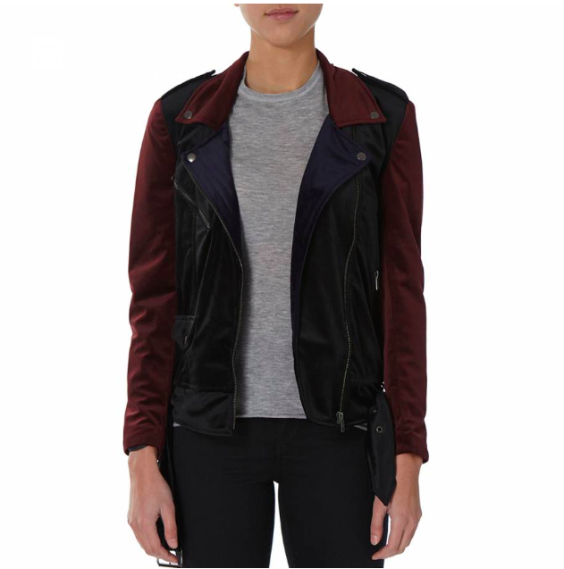

블프세일때 70% OFF 코드를 뿌려서 구입한(...)
Bolongaro Trevor
Five Biker 자켓
영국에서 날라오는건데 11월 25일 주문해서 30일날 받아보는 놀라움;;;
배송비 10파운드 낼만하네여;; 겁나빨라;;
이것저것 쇼핑한거 수다도 떨고싶고
최근 새로 발견한 브랜드 이야기도 하고싶지만
생업을 마치면 누워있는게 다에요;;
뇌가 활동하길 거부합니다;; 기운없셔;;
그러다보니 12월;;;; 12월이라니요;;; 올해도 한달밖에 안남았다네요;;
의식의 흐름에 따른 뷰티&패숑 잡담입니다
설화수 쿠션
케이스가 너무나 내취향이길래 바로 백화점 달려가 구입했습니다
설화수 실란 입사 컬렉션:
쿠션은 맥 / 시세이도 / 설화수 순서로 써봤는데
아직 저의 베스트는 시세이도 입니다
맥 쓸때만 해도 쿠션은 내 취향 아니라 생각했는데
시세이도 제품이 넘 맘에드네요
가볍게 발리고 편해서 좋아요
설화수도 나쁘진 않은데 시세이도 쪽이 좀더 제 취향입니다 :)
끌레드뽀 보떼 쿠션도 좋다는 소릴들어서
관심이 가고 있습니다.
바비브라운 크러쉬드 립칼라
텍스쳐가 내 취향 아니라고 생각했는데
이 제품은 쓰면서 좋아진 케이스
반대로 한눈에 반해서 산
맥 비바글램 시아 - 는 너무 매트하고 색이 생각보다 별로;;;
픽시 립밤
립밤으로서의 기능은 모르겠으나(.....) 슥슥 발라도 색은 참 이쁩니다;
글로우 토닉은 처음엔 따꼼 거려서 나랑 안맞는거 아닌가 싶었는데
한통다비우니 만족스럽네용
재구매 의사 있습니다.
픽시 색조 칼라자체는 예쁜데 제형과 케이스가 참으로 별로에용;;;;
입생 루쥬 볼립떼 샤인 5호 / 92호
둘다 잘 쓰고있습니다
역시...립스틱은 쵹쵹이가 최고
한국와서 피부가 너무 건조합니다;;
얼굴보다는 몸이;;;;;
영국살때는 바디로션 안 발라도 별 문제없었는데
겨울에 너무 건조해요;;;
도대체 이나라는 왜이리 필요한게 많은가;;
가습기도 구매하고 바디로션도 바를려고 노력은하는데;;; 잘 안됩니다;; 크흑
다들 겨울철 보습 어떻게 하시나요 ;ㅂ;
날이추워지니 또다시 아우터에 관심이가고
부츠도 사고싶네여;;
연말이라 공연도 많고 보고싶은 전시도 많은데 체력이 없어요 ;ㅂ;
우선 12월은 일주일에 하나씩 주말에 공연티켓 예매해놓아서
그거 바라보면서 노동할렵니다
그러다보면 월말에 집에서 닭뜯으면서 새해를 맞게되겠지(.....)